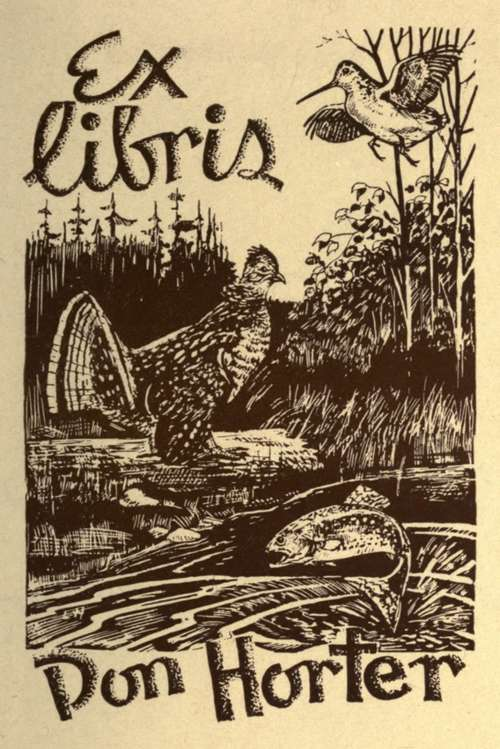

Companion Volumes By The Same Author
Description
This section is from the book "Salmon Fishing", by W. Earl Hodgson. Also available from Amazon: Salmon Fishing.
Companion Volumes By The Same Author
Trout Fishing
A Study of Natural Phenomena
By William Earl Hodgson New Edition
Containing a facsimile in Colours of a " Model Book of Flies," for Stream and Lake, arranged according to the Months in which the lures are appropriate.
Some Opinions of the Press
The Field
"The pictured fly-book at the beginning of the volume is undoubtedly the finest piece of work of the kind that has ever been produced and published in this country, and comes as a revelation of what can be done. The flies stand out from the page with marvellous reality. The illustrations and the letter-press are well matched. . . . We have not had more pleasure from a book for a long time."
The Sporting Times
"It is a scholarly and charming book, written by a man who knows what he is writing about. There is fascination in every chapter."
The Pall Mall Gazette
"This work is in part highly practical, and in part delightfully discursive. ... It is extremely pleasant reading."
Baily's Magazine
" Mr. Hodgson's book stands apart from the mass of angling literature. We may not always agree with him; but, when our disagreement is most complete, we never for a moment lose a sense of respect for the author's clarity of thought, nor our feeling that we are with a writer who is raising the literature of our favourite sport to a higher intellectual plane. . . . The Book of Flies bears some of the very best coloured figures of flies we have ever seen."
The Sportsman
"Fascinating. ... He discourses with unmistakable authority. . . . And the whole book is stylishly and racily written."
The Badminton Magazine
"Mr. Hodgson writes well, and we are convinced that he fishes well also, for this excellent little book shows his keen comprehension of the trout and his ways."
The Sporting Chronicle
"It is an interesting story of the trout and his habits, written by a keen and observant student, and an angler withal who has the inestimable advantage of a thorough understanding of the subject. Mr. Hodgson has the happy knack of riveting the attention, and at times betrays a subtle humour. ... It is the most valuable book of its kind written within recent years."
The Fishing Gazette
" The interest of a work on angling may be safely said to be in direct ratio to the boldness and originality with which the author attacks and discusses debatable points. . . . Tried by this test, Trout Fishing, fresh and stimulating and full of matter as an egg is of meat, must be pronounced one of the most interesting works on angling. . . . All is written in a masterly style, always pleasant and genial. . . . He casts his wet flies and his fancies with charming literary skill. The coloured illustrations of trout flies for lake and stream are beyond comparison the most artistic and life-like reproductions that have ever appeared in print."
Truth
It is beyond doubt the most fascinating and original contribution that has been made to angling literature for many years."
Published by A. & C. Black, Ltd., 4 Soho Square, London, W. L.
Agents - America
The Macmillan Company
64 & 66 Fifth Avenue, New York
Australasia
The Oxford University Press
205 Flinders Lane, Melbourne
Canada
The McMillan Company of Canada, Ltd.
St. Martin's House, 70 Bond Street, Toronto
India
McMillan & Company, Ltd.
McMillan Building, Bombay
309 Bow Bazaar Street, Calcutta
In the possession of Thomas J. Barratt, Esq., London By permission of Messrs. Frost and Reed, of Bristol, the publishers of the Engraving.
Continue to:
Tags
salmon, fish, river, fishing, trout, loch, flies, fishing flies